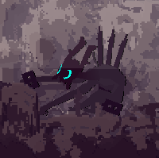
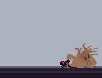
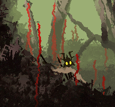
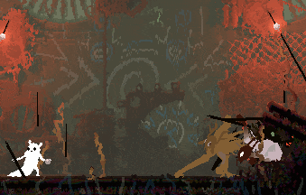
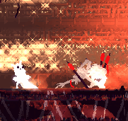
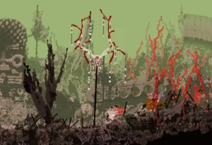
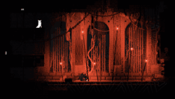
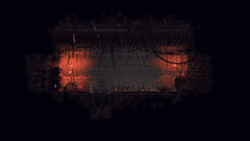

Scavengers

Scavengers are unlike other creatures in Rain World, unlike most animals which are
either prey or predator, scavengers are able to use tools like spears and explosives like
the slug cat protagonist. Depending on which type of slugcat you play they can either be neutral or aggressive
towards you. To bring their reputation up you can either give them tools or pearls, which in return they will help you
when in danger or follow you.
How they work and Strategy
- When encountering scavengers while your reputation with them is unfriendly or neutral, crouch and drop any weapons to avoid conflict and seem less threatening.
- All scavengers have different personalities, so even if you have a good reputation, a overly aggressive scavenger might still kill you, watch for their body language.
- You are able to give valuable items to scavengers and help kill predators to heighten reputation.
Abilities & Behavior

- Like the slugcat, scavengers are able to carry spears, grenades, and rocks to throw at enemies, although they are able to carry multiple spears on their backs.
- Their movements are similar to the slugcat, being able to crawl, walk, climb, and hang from poles, albeit they move slightly faster than the slugcat.
- Use shortcuts and tunnels to move efficiently
Communication and Body Language
Scavengers use body language to communicate what they want with each other and with the slugcat.

- When scavengers want a valuable from the player, they point at the item with their spear or hand.

- To indicate a warning to the slug cat / "Stay Back" they would hold up their spears or weapon and aim it at the slugcat.

- When at a toll booth, this gesture of pawing at the ground indicates the scavenger want the pearl in the slugcat's hand in order to pass
Trading and Toll Booths
You are able to trade objects you find around the world with scavengers, they particularily like pearls, which can be exchanged for passing at a Scavenger toll booth. Scavengers drop more items if reputation with them is high

- Scavenger Toll Booth, need to trade in 1 pearl for passage

- Scavenger Merchants are unique scavengers that usually are contained in a singular room with their wares. They are typically non-hostile and are more willing to trade with the slugcat than just take things.

- Scavengers have a treasury where they put most of their valuables in. Taking anything in it will make the surrounding scavengers hostile and lower reputation.
Tribes
There are 3 different types of tribes for scavengers around the world
Nomads
- Nomads like their name suggests, are scavengers that move around a lot. If you befriend this tribe they will follow the slugcat and defend them, as well as hibernating with the slugcat.
Strongholds
- These are the scavengers with the merchants and treasury
Toll Booth Scavengers
- These are the scavengers that set up the toll booths.